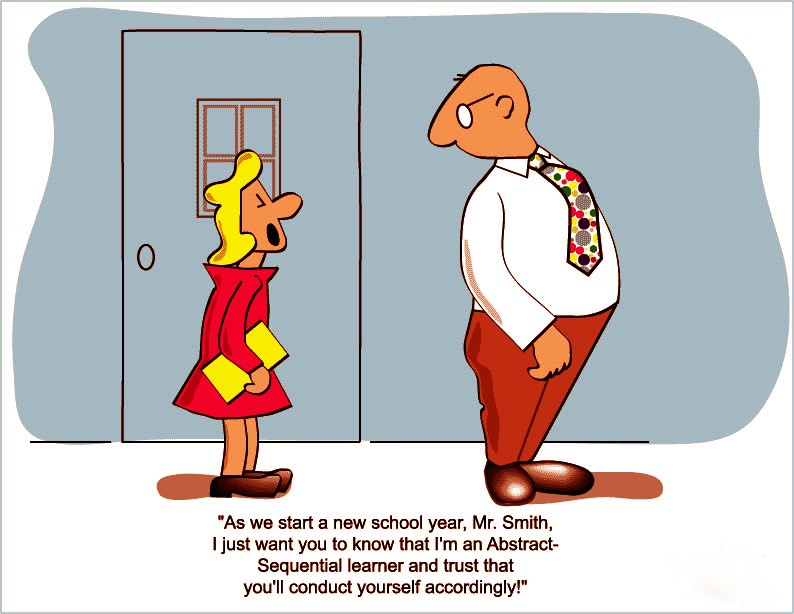
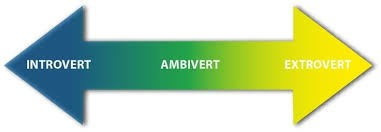
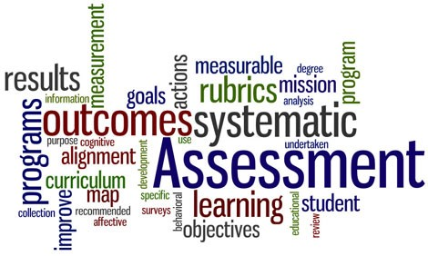

Module 1: Understanding the Learner and Self-Advocacy and Relationship Management in Learning
1.1 Learning Styles and Preferences
In this section of you are going to explore...
- Learning Styles
- Personality Types
- Learning Environments
Learning Styles: Concrete, Abstract, Random, and Sequential
If you want to learn more effectively, it is important to understand learning styles. The key is to first know your own preferences, and then understand others. Learning styles have been categorized in a number of different ways but in this section, we will be examining those developed by Anthony Gregorc.
Concrete, Abstract, Random, Sequential
According to this theory, these components make up learning styles:
- Concrete – This quality enables you to register information directly through your five senses: sight, smell, touch, taste, and hearing. When you are using your concrete ability, you are dealing with the obvious, the "here and now." You are not looking for hidden meanings, or making relationships between ideas or concepts. "It is what it is."
- Abstract – This quality allows you to visualize, to conceive ideas, and to understand or believe that which you cannot actually see. When you are using your abstract quality, you are using your intuition, your imagination, and you are looking beyond “what is†to the more subtle implications. “It is not always what it seems."
- Random – Lets your mind organize information by chunks, and in no particular order. When you are using your random ability, you may often be able to skip steps in a procedure and still produce the desired result. You may even start in the middle, or at the end, and work backwards. You may also prefer your life to be more impulsive, or spur of the moment, than planned.
- Sequential – Allows your mind to organize information in a linear, systematic manner. When using your sequential ability, you are following a logical train of thought, a traditional approach to dealing with information. You may also prefer to have a plan and to follow it, rather than relying on impulse.
- If you prefer random, you might have bounced around or skimmed the information above.
- If you prefer sequential, you may have read it line by line, building upon what you know.
- If you were looking for the example each time, you might prefer concrete.
- If you were saying, “Ah, I can use this to improve my approach to learning or sharing information,†you might prefer abstract.
Concrete Sequential, Concrete Abstract, Abstract Sequential, Abstract Random
Here are the learning styles in a nutshell:
- Concrete Sequential – Concrete Sequential learners like order, logical sequence, following directions, predictability and getting facts. They learn best when they have a structured environment, when they can rely on others to complete this task, when they are faced with predictable situations, and can apply ideas in pragmatic ways. They don’t like working in groups, discussions that seem to have no specific point, working in an unorganized environment, following incomplete or unclear directions, working with unpredictable people, dealing with abstract ideas, having to use their imagination or questions that have no right or wrong answers.
- Concrete Random – This learner likes experimenting to find answers, taking risks, using their intuition, and solving problems independently. They learn best when they are able to use trial-and-error approaches, able to compete with others and are given the opportunity to work through problems by themselves. They don’t like restrictions and limitations, formal reports, routines, re-doing anything once it’s done, keeping detailed records, showing how they got an answer, choosing only one answer or having no options.

- Abstract Sequential – Abstract sequential learners like to be heard. They like to analyze situations before making a decision or acting and they apply logic in solving or finding solutions to problems. They learn best when they have access to experts or references when placed in stimulating environments and they are able to work alone. They do not like being forced to work with those of differing views or not having enough time to deal with a subject thoroughly. They don’t want to repeat the same tasks over and over, deal with lots of specific rules and regulations or "sentimental" thinking. They do not like expressing their emotions or being diplomatic when convincing others.
- Abstract Random – This learner likes to listen to others, bring harmony to group situations, establish healthy relationships with others, and focus on the issues at hand. They learn best when in a personalized environment, given broad or general guidelines, able to maintain friendly relationships, and able to participate in group activities. They don’t like having to explain or justify feelings, competition, working with dictatorial/authoritarian personalities, working in a restrictive environment, working with people who don’t seem friendly, concentrating on one thing at a time, giving exact details, and accepting even positive criticism
We are all a mix of styles, but each of us has a preference. The important point is to know yourself and to realize that other people may not be processing information the same way you do.
Key Takeaways
Here are some key takeaways:
- Know yourself first. Figure out your own learning preferences.
- Figure out if you prefer concrete or random.
- Figure out if you prefer random or sequential.
- Adapt your approach for others.
- Test what works for you.
- Explore other styles.
No thinking style is superior; they are simply different. Each style can be effective in its own way. The important thing is that you become more aware of which thinking style works best for you. Once you know your own style, you can then analyze the others. This will help you understand other people better. It will make you more flexible. And perhaps we can all pick up tips from each other on how to be more effective.

Introvert or Extrovert? Here’s How to Boost Your Productivity
Why our personality types affect the way we work.
As soon as you step into a classroom, library or meeting room, it’s easy to see that each person has his or her own style of working. Some people naturally gravitate to others and always seem to be in groups. Others are much more efficient if they work at home or in a quiet space. At lunchtime, some people enjoy reading while others need to socialize. How you prefer to work, communicate, and recharge your batteries says a lot about your personality type. By personality type, we’re referring to where you fall on the extrovert-introvert scale.
“To work well with other people, you need to understand their personalities and they need to understand yours.†— Adam Grant

Are you an introvert, extrovert, or ambivert?
Introverts are shy and extroverts are outgoing. Simple enough, right? Not exactly. Coined in the 1920s by psychologist Carl Jung, these personality types boil down to energy. For example, introverts are energized by carving out “me time,†while extroverts will seek out the party.
Here is a brief overview of each personality type and their different levels:
Introverts:
Introverts recharge by spending time alone. According to a paper written by Wellesley psychologist Jonathan Cheek and his graduate students, there are actually four levels of introversion: social, thinking, anxious, and restrained.
- Social introverts most closely resemble the common understanding of introversion. They prefer to be alone or to socialize with small groups instead of large ones, however, they are not shy and don’t feel anxious around others.
- Thinking introverts don’t share the aversion to social events, but they tend to get lost in their own thoughts. They’re introspective, thoughtful, and self-reflective.
- Anxious introverts seek out solitude because they tend to feel awkward or self-conscious around others. And this anxiety doesn’t always go away when they’re alone. They tend to ruminate on things that might have or could have gone wrong.
- Restrained introverts think before they act. They move at a slightly slower pace, making sure every action is intentional and thought through.
Extroverts:
Extroverts feel energized by being around lots of people. They don’t mind being the center of attention, however spending too much time alone can drain them mentally. And, just like introversion, there are different levels of extroversion. According to a study published in Cognitive, Affective, & Behavioral Neuroscience, there are two types: the agentic extrovert and affiliative extrovert.
- Agentic extroverts are the go-getters. They are assertive, persistent, and driven by success. They feel comfortable being in the limelight and take leadership positions when opportunities arise.
- Affiliative extroverts are the social butterflies. They are friendly, warm, and can easily break the ice with new people. Close relationships mean a lot to them and they tend to have a very large group of friends.
Ambiverts:
Ambiverts are right in the middle and they actually make up the majority of the population. According to Barry Smith, professor emeritus and director of the Laboratories of Human Psychophysiology at the University of Maryland, “Ambiverts make up 68% of the population.â€
Ambiverts are socially comfortable and interactive, yet value alone time. But, they don’t function well in either direction for too long. Balance is key for ambiverts and their preference for introversion or extroversion can change depending on the situation.
Find out where you fall:
Still not quite sure if you’re an introvert, extrovert, or ambivert?
- Take this quiz from organizational psychologist Adam Grant. You may want to encourage your friends and people you work with to take it as well. After all, as Grant says in his Work Life podcast, “To work well with other people, you need to understand their personalities and they need to understand yours.â€
Tips to Maximize Productivity:
There is no right or wrong personality type, but understanding if you are an introvert, extrovert, or ambivert can help you better understand what you need to do your best work.
Productivity tips for each personality type:
Introverts:
- Control your environment: Open areas were created to foster collaboration, but along with ease of communication comes your neighbor’s dubstep music and dozens of daily side conversations. The open floor plan does not work for everyone, so don’t feel stuck at your desk. If you need quiet time, seek out a calm corner to do your work.
- Focus on one-on-one interactions: Group projects and auditorium-sized events can be a nightmare for introverts. Depending on your role, you may never be able to escape large meetings or group work, but you can still make time for more intimate, meaningful conversations in a one-on-one setting. Follow up with the main stakeholder in a solo chat or meet with teammates individually to help improve your comfort level.
- Slow down: Some people love the go-go-go mentality, but introverts tend to excel when they dive deep into one subject or take their time to really think through a problem. But your team will never know this if you don’t speak up. Make sure to communicate your preferred working style to your manager and raise your hand for projects that align with deeper thinking.
- Prepare for meetings: There are always those two or three people who dominate meetings. If you wait for a natural opening in the conversation to contribute, you may be waiting forever. To help motivate yourself to participate in meetings, review the agenda ahead of time and jot down some things you want to say. And, make sure to get them in early as meetings can easily go off-topic as they progress.
Extroverts:
- Seek out activity: A quiet office can be deafening. You need the white noise of music, chatter, and movement to get the creative juices flowing. If you aren’t feeling inspired at your desk, slip out to a coffee shop. Yes, just like your counterparts (the introverts), a coffee shop can work for any personality type. After all, who can say no to coffee and pastries while working? Another option: take a break, get outside, and walk around the block. Sometimes all you need is a change of scenery to feel refreshed.
- Embrace the busy, but be careful: While some may get stressed out from a growing list of to-dos or jumping back and forth between meetings, you relish the challenge. Use this to your advantage by offering to take on larger projects with many moving parts. But remember: it’s easy for extroverts to go overboard. While being busy motivates you to do your best work, set boundaries so you don’t burn out.
- Schedule a social hour: You get energized from social interactions, but meetings don’t always qualify as “social hour.†Make time in your day to intentionally connect with others. For example, have lunch or coffee with someone new every week. This is especially important for extroverts who work in a distributed team and don’t have a natural outlet for socializing. If you work remotely, take advantage of the flexibility and work in a coworking space, take a daily group fitness class, or attend networking events in your area.
- Block off time for reflection: You thrive on multitasking and checking things off your list, but that usually means you jump from task to task without reflecting on what you just accomplished. So, after a big milestone, block 20 or 30 minutes on your calendar to think through what worked, what didn’t work, and analyze results.
Ambiverts:
- Leverage your flexibility: Ambiverts can usually feed off the energy of those around them. Because you have a bit of introvert and extrovert in you, you can easily adapt to a social, boisterous environment and also relish a quiet, thoughtful mood. While optimizing for your own productivity, consider the styles of the people you interact with and stay flexible so you can meet your own needs without compromising theirs.
- Experiment and find what works for you: Depending on where you fall on the introvert and extrovert spectrum, you may find that some of the above tips resonate more with you. Or, your mood may change depending on the day. Pick and choose from tips for both introverts and extroverts to find what suits you. Or, you could try them all out and see what works.
A tip for everyone: DON’T GET TOO COMFORTABLE...
These tips are designed to optimize productivity based on your personality type, but they should not force you into the introvert or extrovert corner. Remember to push yourself outside of your comfort zone and try things that feel scary or uncomfortable.
For example, introverts may find that a little bit of socializing goes a long way in forging better relationships and increasing their visibility with other students. Extroverts may find value in sharing the spotlight and learning how to delegate.
You still need flexibility to collaborate:
Few of us are pure introverts or extroverts. We generally fall somewhere in the middle, complete with our own individual quirks and habits.
While we do tend to associate with one side more than the other, that should not overpower the need for collaboration in the workplace. Introverts may not always have the luxury of quiet, deep thinking. Extroverts may have to work on projects individually. Both sides need to compromise, and that’s okay.
That just means when you leave school, you can go back to that good book you were reading or meet up with friends. You’ll recharge in your own way and come back to class the next day ready to adapt to everyone’s unique personality types.
Learning Environments
There are a wide variety of environments that students learn in today. These include large group lectures, study groups, tutor/mentor sessions, self‑directed learning, online forums, learning commons, and multimedia experiences. Regardless of the context, there are certain characteristics that generally contribute to an effective learning environment. Some of these are listed below.
Characteristics of Highly Effective Learning Environments:
- The students ask the questions—good questions
This is really crucial for the whole learning process to work. The role of curiosity has been studied at length, but suffice to say that if a learner enters any learning activity with little to no natural curiosity, prospects for meaningful interaction with texts, media, and specific tasks are bleak.
- Questions are valued over answers
Questions are more important than answers. So it is important to continually ask questions throughout the learning process.
- Ideas come from divergent sources
Ideas for lessons, reading, tests, and projects—the fibre of formal learning—should come from a variety of sources. Consider sources like professional and cultural mentors, the community, content experts outside of education, and other students. And when these sources disagree with one another, keep asking good questions, because that’s what the real world is like.
- A variety of learning models are used
Inquiry-based learning, project-based learning, direct instruction, peer-to-peer learning, school-to-school, eLearning, Mobile learning, the flipped classroom, all have their benefits and strengths. Don’t just use the ones you like, look for opportunities to try new approaches in your learning.
- Classroom learning “empties†into a connected community
In a highly-effective learning environment, learning doesn’t need to be radically repackaged to make sense in the “real world,†but starts and ends there. We should always try to relate our learning to the world around us. In this way, learning becomes real and authentic.
- Learning is personalized by a variety of criteria
Personalized learning is likely the future, but for now, the onus for routing students is almost entirely on the shoulders of the classroom teacher. Still, many teachers provide students with choice and opportunities to make learning more effective for each individual in the class. Take advantage of these opportunities to ensure activities allow you to learn in a way that is effective for you.

- Assessment is about more than just getting marks
Teachers in recent years have been using a bigger variety of assessments, including formative assessments in their classrooms. Take advantage of this and ensure you understand each assessment, how it connects to the outcomes of the course and how it can help you learn better. Remember that assessment can be done for learning, not just to measure how much you have learned.
- Criteria for success is balanced and transparent
As a student, you should not have to guess what “success†in your classroom looks like. Teachers usually start courses by providing a syllabus that breaks down how you will be assessed throughout the course. Read and understand this so you can focus your energies on those things that will help bring you to academic success.
- Learning habits are constantly modelled
In most learning environments effective practices are usually modelled for students. Use these models to help you learn. Remember that continual practice with ongoing reference to reliable models are keys to learning. Be sure to find different ways and environments to practice your skills.